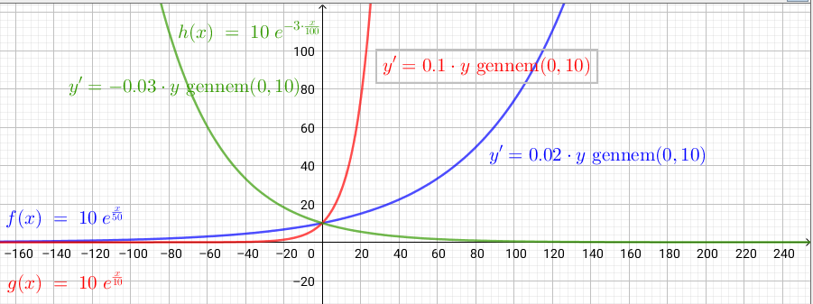
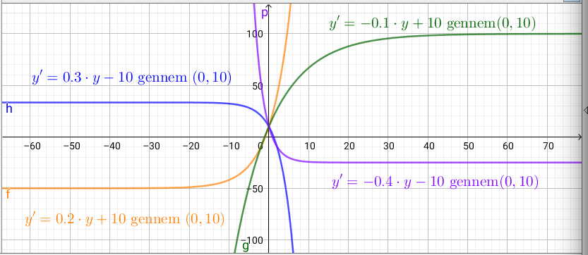
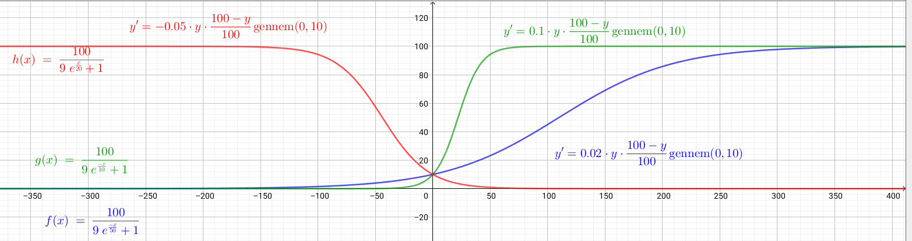
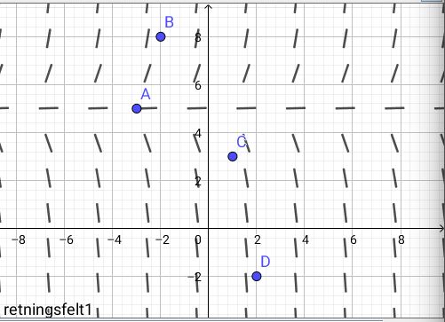
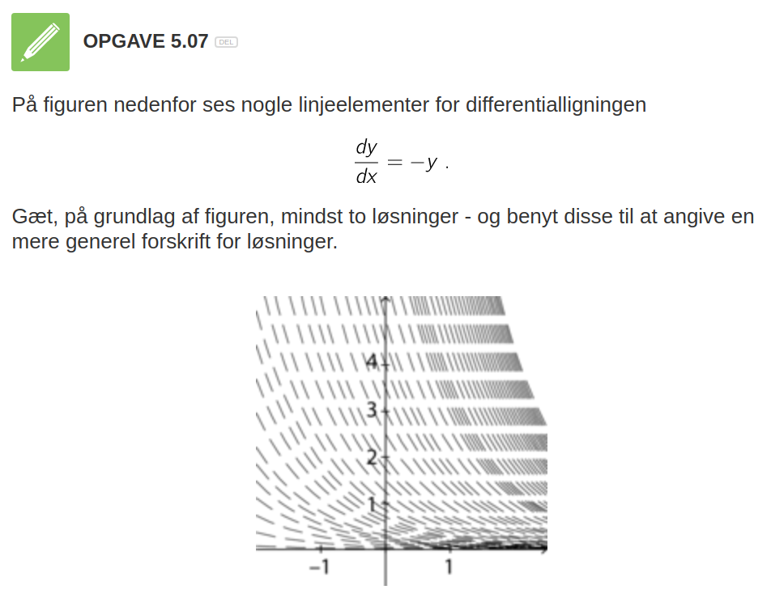
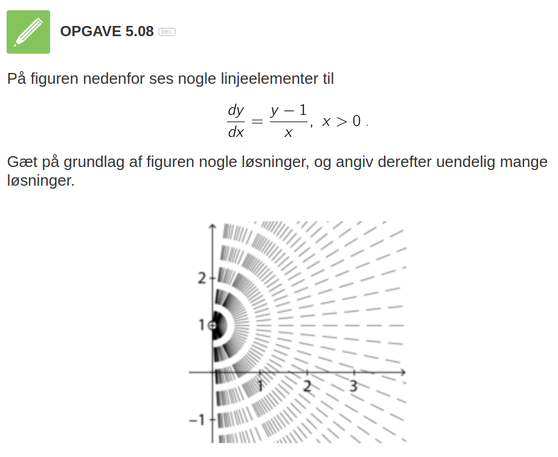
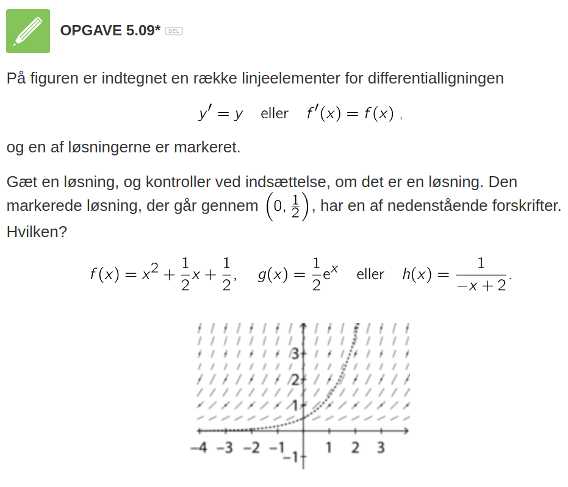
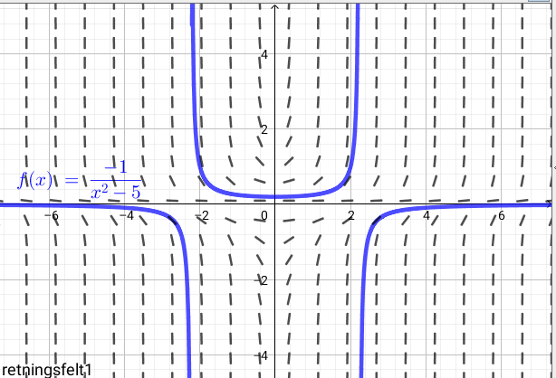
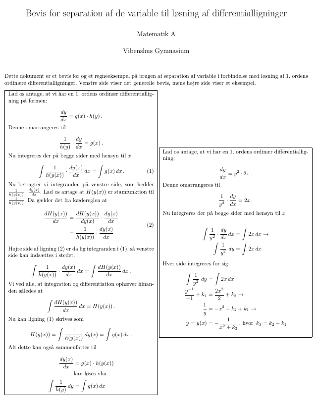
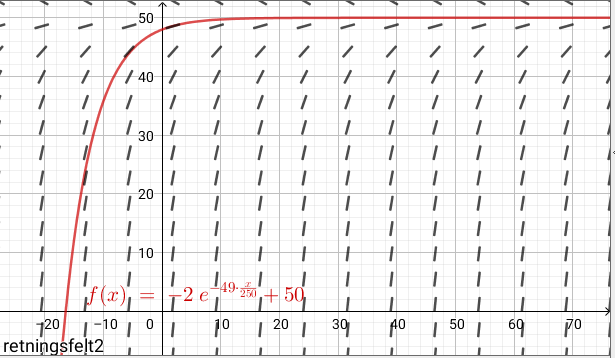

Hvad ved I om differentialligninger?
En for alle
En for alle
Hvad ved I i gruppen om differentialligninger?
Differentialkvotienten er proportionel med funktionen selv.
Differentialligning \[y'=k \cdot y\]
Løsning \[y=c \cdot e^{k\cdot x}\]
\(k\) er vækstkonstanten
\(c\) er en integrationskonstant
Grafiske eksempler

Differentialkvotienten er lineært afhængig af funktionen selv.
Differentialligning \[y'=a\cdot y +b\]
Løsning \[y=-\frac{b}{a} + c\cdot e^{a\cdot x}\]
\(- \frac{b}{a}\) angiver en vandret asymptote, som kan parallelforskyde en "almindelige" eksponentialfunktion og eller ned ad y-aksen.
Grafiske eksempler

Eksponentiel vækst med begrænsning.
Tre forskellige differentialligninger til at beskrive den samme vækst.
| Diffligning | Løsning | |
|---|---|---|
| 1 | \(y' = k \cdot y (a - y)\) | \(y=\frac{a}{1+c \cdot e^{-k a x}}\) |
| 2 | \(y' = y (b - a y)\) | \(y=\frac{\frac{b}{a}}{1+c e^{-b x}}\) |
| 3 | \(y' = k \cdot y \cdot \frac{(K - y)}{K}\) | \(y=\frac{K}{1+c\cdot e^{-k \cdot x}}\) |
Særligt nr. 3 giver fysisk mening.
Differentialligning \[y' = k \cdot y \cdot \frac{(K - y)}{K}\]
Løsning \[y=\frac{K}{1+c\cdot e^{-k \cdot x}}\]
\(k\) er den samme vækstkonstant, som for almindelig eksponentiel vækst, mens \(K\) er maksimal værdi for \(y\). \(y=K\) og \(y=0\) er altså begge vandrette asymptoter, som begrænser væksten.
Grafiske eksempler

Indsæt de tilhørende løsninger i de respektive differentialligninger, og tjek om ligningen er sand.
Team-par-solo
| Diffligning | Løsning | |
|---|---|---|
| 1 | \(y'=k \cdot y\) | \(y=c \cdot e^{k\cdot x}\) |
| 2 | \(y'=a\cdot y +b\) | \(y=-\frac{b}{a} + c\cdot e^{a\cdot x}\) |
| 3 | \(y' = k \cdot y (a - y)\) | \(y=\frac{a}{1+c \cdot e^{-k a x}}\) |
| 4 | \(y' = y (b - a y)\) | \(y=\frac{\frac{b}{a}}{1+c e^{-b x}}\) |
| 5 | \(y' = k \cdot y \cdot \frac{(K- y)}{K}\) | \(y=\frac{K}{1+c\cdot e^{-k \cdot x}}\) |
Team-par-solo
Et linje element er et kendt punkt på en graf med tilhørende hældning. Hvis \(x_0\) er et kendt x-koordinat så kan et linjeelement skrives som
\[(x_0\,,\,f(x_0) \,;\, f'(x_0))\]
For differentialligningen
\[y' = 2\cdot y -10\]
skal vi finde linjeelementerne i hhv A(-3,5) , B(-2,8) , C(1,3) og D(2,-2).
Grafisk er det nemmest at anvende geogebras funktion retningsfelt.
Retningsfelt(2*y-10,10) giver følgende:

Opgaverne løses vha par-sammenligning



When you battle differential equations you better wear
S H I E L D S
Vi kommer til at arbejde med.
Men i rækkefølgen
Hvis højresiden af differentialligningen ikke afhænger af \(y\), men kun af funktioner af x eller konstanter, kan differentialligningen løses ved (simpel) integration. Altså på formen: \[y' = f(x)\]
Vi skal løse \[\frac{dy}{dx} = 4 e^x + \sin (x)\]
\[\int \frac{dy}{dx} \,dx = \int 4 e^x + \sin (x)\, dx\]
\[y = \int 4 e^x + \sin (x)\, dx\]
\[y = 4 e^x - \cos (x) + c\]
Bestem den fuldstændige løsning til følgende differentialligninger:
- trin: Chefen giver trin-for-trin instruktioner til sekretæren
- trin: Sekretæren nedskriver chefens løsning, eller udfører hans instruktion trin for trin.
- trin: Sektretæren roser chefen, hvis instruktionen fører til en løsning. Ellers hjælper sektretæren med at få løst opgaven og roser stadig chefen.
- trin: Roller byttes.
Bestem den fuldstændige løsning til følgende differentialligninger:
Hvis differentialligningen kan skrives op som
\[\frac{d y}{d x} = f(y)\cdot g(x)\]
kan den løses sådan her:
\[\int \frac{1}{f(y)} \, dy = \int g(x) \, dx\]
Vi skal løse følgende differentialligning med tilhørende betingelse:
\[\frac{d y}{dx} = 2 x y^2 \,,\, y(2)=1\]
Vi separerer med y'erne på venstre side og x'erne på højre
\[\int \frac{1}{y^2} \, dy = \int 2 x \, dx\]
og integrerer
\[\int \frac{1}{y^2} \,dx = \int y^{-2}\,dx = \frac{y^{-1}}{-1} + k_1 = - \frac{1}{y} + k_1\]
\[\int 2x \,dx = x^2 + k_2\]
Det hele sættes sammen igen.
\[- \frac{1}{y}+k_1 = x^2+k_2\]
Integrationskonstanterne lægges sammen til én konstant \(k\) og y isoleres
\[y=\frac{-1}{x^2+k}\]
Den partikulære løsning findes ved at indsætte oplysningerne fra opgaven i den fundne generelle løsning og isolere \(k\).
\[1 = \frac{-1}{2^2+k}\to 4 + k = -1 \to k = -5 \]
Den partikulære løsning er da: \[y = f(x) = \frac{-1}{x^2-5}\]
Et grafisk overblik kan skabes i geogebra vha kommandoerne
RetningsFelt(2*x*y^2,15)BeregnODE(2*x*y^2,(2,1))
Opgave 1 (Ping-pong-par)
I hvilke tilfælde kan man anvende separation af de variable?
Opgave 2 (Team-par-solo)
Bestem med separation af de variable den fuldstændige løsning til følgende differentialligninger:
Læs følgende bevis, men brug Rollelæsning

Rollelæsning:
Fire roller: Oplæser, Referent, Overskriftmester og sammenhængsmester.
Nu begynder det at blive lidt lakrids.
\[\frac{dy}{dx} + P(x) \cdot y = Q(x)\]
Vi benytter Lyt-tegn-skriv
\[\frac{dy}{dx} + P(x) \cdot y = Q(x)\]
\[\mu(x) \cdot \frac{dy}{dx} + \mu(x)\cdot P(x) y = \mu(x) \cdot Q(x)\]
Det magiske ved \(\mu(x)\) er, at det antages, at den opfylder betingelsen:
\[\mu(x) \cdot P(x) = \mu'(x)\]
Venstre side af differentialligningen er blot produktreglen \[\mu(x) \cdot \frac{dy}{dx} + \mu'(x) \cdot y = \frac{d}{dx} \left( \mu(x) \cdot y(x) \right)\]
\[\frac{d}{dx}\left( \mu(x) \cdot y(x) \right) =\mu(x) \cdot Q(x)\] Nu kan vi gøre noget ved differentialligningen for at få fat i \(y(x)\).
Vi skal bruge vores antagelse fra tidligere, nemlig \[\mu(x)\cdot P(x) = \mu'(x)\]
Vi har den generelle løsning \[y(x) =\frac{\int \mu(x) \cdot Q(x)\, dx + c_1}{\mu(x)}\] og en måde at udregne integrationsfaktoren på \[\mu(x) = e^{\int P(x) \,dx}\cdot c_3\]
For en lineær differentialligning på formen \[\frac{dy}{dx} + P(x)\cdot y = Q(x)\]
er løsningen givet ved \[y(x) = \frac{\int \mu(x) \cdot Q(x)\, dx+c}{\mu(x)}\,,\] hvor \[\mu(x) = e^{\int P(x) \,dx}\]
En procedure er dog mere anvendelig end dette.
\[\frac{dy}{dx} = 9.8 - 0.196 \cdot y\]
Multiplicér
Integrér
Isolér y
\[y = 50.0 + c_1\cdot e^{-0.196x}\] Vi kan også tilføje begyndelses/randbetingelser.
Løsningskurven skal gå gennem \((0,48)\)
Retningsfelt og løsningskurve

Geogebra:
retningsfelt(9.8-0.196*y,15)beregnode(9.8-0.196*y,(0,48))OBS: \(y'\) skal være isoleret og "højresiden" af diffligningen skal indtastes i geogebra.
Team-par-solo
(Hvis de fremkomne integraler er svære at løse, så brug CAS.)
Opgave 1: Løs differentialligningen \[y' -y - x \cdot e^x = 0\]
Opgave 2: Løs differentialligningen \[y' - 2y = x\]
Opgave 3: Løs differentialligningen \[x\cdot y' = y+2x^3\]
Opgave 4: Løs differentialligningen \[x^2 y' + x \cdot y + 2 =0\]
Opgave 5: Løs differentialligningen \[y' - y \cdot \tan (x) = \sin (x)\,,\text{ for } y(0)=1\]
Opgave 6: Løs differentialligningen \[y' + \frac{3}{x} \cdot y= \frac{2}{x^2}\,,\text{ for } y(1)=2\]